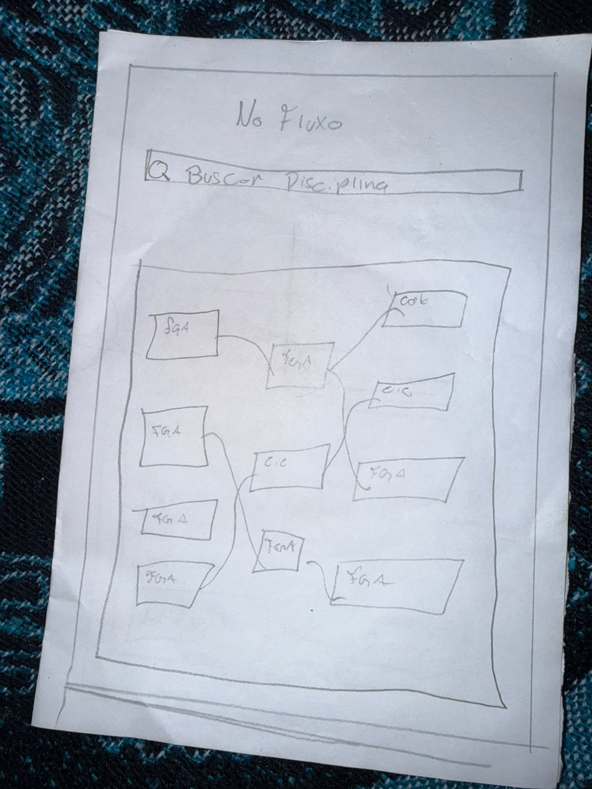
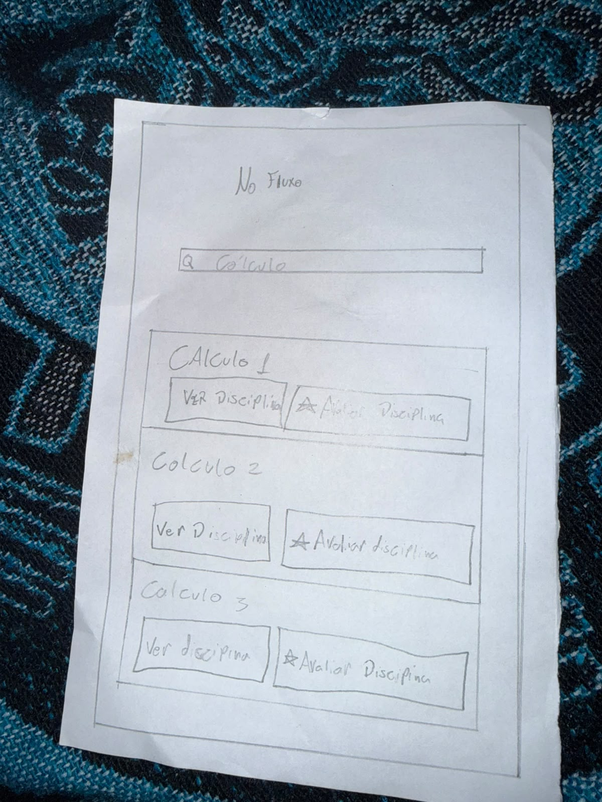
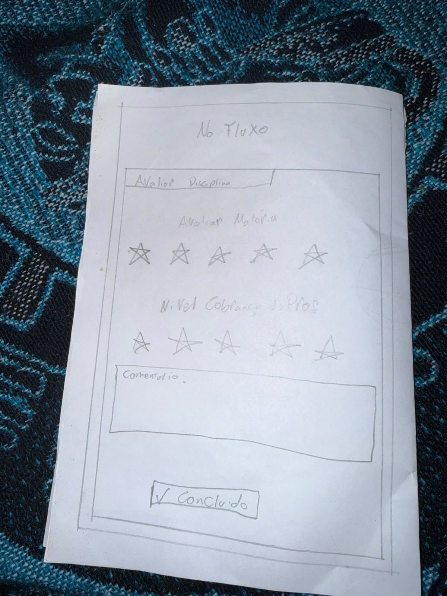

Relato dos resultados da avaliação do protótipo de papel
Autor: Victor Andreozzi de La Rocque Couto, matrícula 221029285 · Revisor: a definir (validação pendente)
Funcionalidade: Avaliação de Disciplinas · Conteúdo desta página: relato dos resultados da avaliação do protótipo de papel · Tabelas 1 a 9 · Figuras 1 a 3
Outros artefatos do autor: Planejamento da avaliação do protótipo de alta fidelidade · Planejamento do relato dos resultados do protótipo de alta fidelidade
Este artefato relata os resultados da avaliação do Protótipo de Papel da Avaliação de Disciplinas, planejada na Entrega 5 com o framework DECIDE (Planejamento da avaliação do protótipo de papel). A estrutura segue o Planejamento do relato dos resultados do protótipo de papel e o que Barbosa e Silva (2010, seções 9.7.5 e 10.2.3) indicam para o relato de uma avaliação por prototipação em papel: objetivos, breve descrição do método, número e perfil de avaliadores e participantes, tarefas executadas, problemas corrigidos e não corrigidos e partes do sistema que podem ser mais bem elaboradas.
1. Relato dos resultados
1.1 Objetivo e escopo da avaliação
A avaliação teve três objetivos, definidos no planejamento: (1) verificar se o estudante consegue avaliar uma disciplina do início ao fim (localizar, preencher e enviar) usando apenas o protótipo, sem ajuda do avaliador; (2) verificar se as correções propostas nas avaliações do storyboard e da análise de tarefas resolvem os problemas encontrados (A-01 a A-03 e B-01 a B-07); e (3) identificar novos problemas de usabilidade antes de construir o protótipo de alta fidelidade.
O escopo foi o protótipo de papel efetivamente construído, com a tela inicial do No Fluxo UnB e três telas da Avaliação de Disciplinas (Tabela 3 e Figuras 1 a 3), e a tarefa de avaliar uma disciplina. As perguntas da avaliação são respondidas na Tabela 6; as que não puderam ser respondidas têm a justificativa registrada, como pedem Barbosa e Silva (2010, seção 9.7.5).
1.2 Metodologia utilizada
Foi usado o método de prototipação em papel (Barbosa e Silva, 2010, seção 10.2.3): o participante interage com telas desenhadas à mão, apontando o que quer acionar, e um avaliador faz o papel do “computador”, trocando as folhas conforme as ações, sem explicar nem orientar. Antes de iniciar, o condutor pediu que o participante lesse em voz alta o que via e pensasse em voz alta durante o uso, fez uma pré-entrevista curta para coletar os dados de perfil e explicou em poucas palavras o que é o No Fluxo UnB. A partir daí, disse que não falaria mais nada e o participante usou o protótipo sozinho.
| Campo | Registro |
|---|---|
| Data, horário e local | 03/11/2026, por volta das 10h20, em sala da UnB Campus Gama, no mesmo dia das sessões das outras funcionalidades do grupo. |
| Duração | 3 min 32 s de gravação, dos quais cerca de 1 min 46 s de uso do protótipo. |
| Participantes | 1 (P01). |
| Versão do protótipo | Versão 1: tela inicial compartilhada pelo grupo e três telas da Avaliação de Disciplinas (Tabela 3). |
| Registro dos dados | Gravação em vídeo da sessão e anotações de um colega do grupo; transcrição do áudio usada nesta análise. |
| Desvios do planejamento | Um participante em vez de cinco; uma tarefa em vez de três; protótipo com três telas em vez das telas T1 a T6 e das peças móveis previstas; entrevista pós-teste e tabela de notas de 1 a 5 não registradas; gravação mostrando o rosto do participante, e não apenas as mãos e o protótipo. |
Fonte: Victor Andreozzi de La Rocque Couto (2026).
1.3 Perfil dos avaliadores e participantes
A sessão foi conduzida por Victor Andreozzi de La Rocque Couto, que apresentou o protótipo e fez o papel do “computador”, e acompanhada por colegas do grupo, um deles anotando a sessão. O participante é identificado apenas por código, sem nome nem matrícula; os dados de perfil vêm da pré-entrevista.
| Código | Curso | Semestre | Idade | Já usou o No Fluxo UnB? | Observação |
|---|---|---|---|---|---|
| P01 | Engenharia Eletrônica, graduado na UnB Campus Gama; mestrado em andamento na UnB | Não se aplica (pós-graduação) | 26 anos | Não; primeiro contato com a plataforma | Participou, no mesmo dia, da avaliação do protótipo de papel do Street View (sessão P02 de Matheus do Vale Lameira). |
Fonte: Victor Andreozzi de La Rocque Couto (2026).
1.4 Sumário dos resultados e achados
O protótipo avaliado é mais simples que o planejado na Entrega 5. A Tabela 3 descreve as telas usadas na sessão e as Figuras 1 a 3 mostram as folhas desenhadas à mão.
| Tela | Conteúdo | Correspondência com o planejamento |
|---|---|---|
| H1 Tela inicial | Tela inicial do No Fluxo UnB, compartilhada pelo grupo, com as opções de visão do campus, gerenciador de faltas e avaliar disciplina. | Ponto de entrada (Quadro 3 do storyboard). |
| AD1 Busca e fluxograma | Logotipo “No Fluxo”, campo “Buscar disciplina” e o fluxograma do curso com as disciplinas por departamento (FGA, CIC, COL). | T1 Busca de disciplinas, sem os filtros por departamento e por professor. |
| AD2 Resultados da busca | Busca “Cálculo” com Cálculo 1, 2 e 3; cada disciplina com os botões “Ver disciplina” e “Avaliar disciplina”. | T2 Resultados da busca; o botão “Ver disciplina” leva à T3, que não foi desenhada. |
| AD3 Formulário de avaliação | Título “Avaliar disciplina”; “Avaliar matéria” com cinco estrelas; “Nível de cobrança do professor” com cinco estrelas; caixa “Comentário”; botão “Concluído”. | T4 Formulário de avaliação, sem o aviso de anonimato, os rótulos nos extremos das escalas, a dica de “cobrança”, o contador de caracteres, o resumo dos relatórios e o botão “Descartar”. As telas T5 (Revisão) e T6 (Confirmação) não foram desenhadas. |
Fonte: Victor Andreozzi de La Rocque Couto (2026).

Fonte: Victor Andreozzi de La Rocque Couto (2026).

Fonte: Victor Andreozzi de La Rocque Couto (2026).

Fonte: Victor Andreozzi de La Rocque Couto (2026).
O participante não recebeu um cenário escrito: depois da explicação inicial, escolheu sozinho a função de avaliar disciplina e avaliou Cálculo, o que corresponde à Tarefa 1 do planejamento (avaliar uma disciplina). As Tarefas 2 (consultar e avaliar, com erro de envio simulado) e 3 (desistir da avaliação) não foram aplicadas. A Tabela 4 resume o desempenho, e a Tabela 5 registra a sequência observada, a partir da gravação.
| Tarefa | Concluiu sem ajuda | Concluiu com ajuda | Não concluiu | Tempo | Erros e hesitações |
|---|---|---|---|---|---|
| 1 Avaliar uma disciplina | 1 de 1 | 0 de 1 | 0 de 1 | cerca de 1 min 46 s | Nenhum erro e nenhuma hesitação; nenhum pedido de ajuda. |
| 2 Consultar e avaliar | — | — | — | — | Não aplicada. |
| 3 Desistir da avaliação | — | — | — | — | Não aplicada. |
Fonte: Victor Andreozzi de La Rocque Couto (2026).
| Etapa | Tela | Ação ou fala do participante (resumo) |
|---|---|---|
| 1 | H1 | Lê as opções da tela inicial (visão do campus, gerenciador de faltas e avaliar disciplina) e diz que vai testar a função de avaliar disciplina. |
| 2 | AD1 | Interpreta que pode buscar a disciplina pelo nome, pelo código ou pelos dois, e escolhe buscar pelo nome. |
| 3 | AD2 | Digita só parte do nome (“cálculo”) e vê Cálculo 1, 2 e 3; deduz que “Ver disciplina” mostra informações sobre o conteúdo programático da disciplina. |
| 4 | AD3 | Identifica que pode avaliar a matéria, o nível de cobrança do professor e deixar comentários, que entende como sugestões de melhoria para o futuro da disciplina. |
| 5 | AD3 | Aciona “Concluído” e encerra a tarefa. |
Fonte: Victor Andreozzi de La Rocque Couto (2026).
Aspectos positivos observados:
- A escolha da função na tela inicial foi imediata: o participante foi direto à avaliação de disciplinas, o que indica que o ato de avaliar ficou saliente (problema A-02 da avaliação do storyboard).
- A busca por parte do nome funcionou como esperado, e o participante percebeu sozinho que também poderia buscar pelo código.
- O botão “Avaliar disciplina” ao lado de cada resultado levou ao formulário em um passo, sem passar pela página da disciplina.
- O formulário foi entendido como um todo: o participante reconheceu as duas notas e o comentário (A-03) e encontrou o botão “Concluído” sem hesitar (B-02).
A Tabela 6 responde às perguntas da avaliação, as mesmas usadas pelo grupo na avaliação dos protótipos de papel das outras funcionalidades, adaptadas à Avaliação de Disciplinas. A coluna “Objetivo” indica a qual dos objetivos da seção 1.1 cada pergunta se refere. Quando a resposta não pôde ser obtida na sessão, a justificativa está registrada (Barbosa e Silva, 2010, seção 9.7.5).
| ID | Pergunta | Objetivo | Resposta e evidências |
|---|---|---|---|
| P-Q1 | O aluno consegue operar o protótipo da Avaliação de Disciplinas? | 1 | Sim. O participante operou o protótipo sozinho, lendo as telas em voz alta e apontando as opções, e concluiu a Tarefa 1 sem ajuda do avaliador. |
| P-Q2 | Ele atinge o seu objetivo? Com quanta eficiência, em quanto tempo e após cometer quantos erros? | 1 | Sim. Avaliou Cálculo em cerca de 1 min 46 s, sem erros, desvios ou pedidos de ajuda, seguindo o caminho previsto: tela inicial, busca, resultados e formulário (H1, AD1, AD2 e AD3). Só a Tarefa 1 foi aplicada. |
| P-Q3 | Que parte da interface e da interação o deixa insatisfeito? | 3 | Nenhuma parte gerou insatisfação visível: não houve hesitação nem reclamação durante o uso. A entrevista pós-teste não foi registrada, por isso a opinião declarada do participante não pôde ser verificada. |
| P-Q4 | Ele entende o que significa e para que serve cada elemento de interface? | 2 e 3 | Em parte. Entendeu a busca por nome ou código, o botão “Avaliar disciplina”, a escala de cobrança do professor e o botão “Concluído”. Interpretou de forma diferente da pretendida: a escala “Avaliar matéria”, lida como avaliação geral e não da dificuldade (PP-01); o botão “Ver disciplina”, entendido como conteúdo programático (PP-04); e o comentário, entendido como sugestão de melhoria para a disciplina (PP-06). Não percebeu que a avaliação é anônima (PP-02). |
| P-Q5 | Ele vai entender o que deve fazer em seguida? | 1 | Sim. Em cada tela soube o próximo passo: escolheu avaliar disciplina na tela inicial, buscou, acionou “Avaliar disciplina” e encerrou com “Concluído”. Depois de “Concluído”, porém, o protótipo não dá retorno de que a avaliação foi enviada (PP-03). |
| P-Q6 | Que problemas dificultam ou impedem o aluno de alcançar o objetivo? Onde se manifestam, com que frequência e com que gravidade? | 3 | Nenhum problema impediu a tarefa. Os problemas que dificultam o uso ou comprometem a qualidade das avaliações são PP-01 a PP-06 (Tabela 7). Eles se manifestam no formulário (AD3) e nos resultados da busca (AD2), ocorreram com o único participante (1 de 1) e têm severidade de 1 (Leve) a 3 (Catastrófico). O PP-05 foi identificado pela inspeção do protótipo, porque a Tarefa 3 não foi aplicada. |
Fonte: Victor Andreozzi de La Rocque Couto (2026), a partir das perguntas da Tabela 9.1 de Barbosa e Silva (2010).
Problemas corrigidos durante os ciclos de avaliação e reprojeto. Com uma única sessão, não houve ciclo de avaliação e reprojeto: nenhum problema foi corrigido no papel e testado de novo. Todos os problemas ficam na lista dos ainda não corrigidos (Tabela 7).
| ID | Local (tela) | Fatores de usabilidade prejudicados | Descrição e justificativa | Severidade (0 a 3) | Frequência | Sugestão de correção |
|---|---|---|---|---|---|---|
| PP-01 | AD3 | Facilidade de aprendizado; segurança no uso | A primeira escala tem o rótulo “Avaliar matéria” e usa estrelas. O participante a leu como uma avaliação geral da disciplina, e não da dificuldade. Como estrelas costumam indicar qualidade, o aluno pode dar 5 estrelas a uma disciplina de que gostou, e não a uma muito difícil, o que distorce os dados que os próximos alunos vão consultar. Retoma A-03 e B-06. | 2 (Grande) | 1 de 1 | Rotular a escala como “Dificuldade da disciplina”, trocar as estrelas por uma escala de 1 a 5 com rótulos nos extremos (“Muito fácil” e “Muito difícil”) e fazer o mesmo na escala de cobrança. |
| PP-02 | AD3 | Satisfação; comunicabilidade | O formulário não informa que a avaliação é anônima, e o participante não mencionou o anonimato. Sem essa garantia, o aluno pode ter receio de avaliar o professor. Retoma A-01 e B-04. | 2 (Grande) | 1 de 1 | Incluir o aviso “Sua avaliação é anônima” no topo do formulário, como previsto na T4. |
| PP-03 | AD3 (após “Concluído”) | Eficiência; satisfação (visibilidade do estado do sistema) | Depois de “Concluído”, o protótipo não mostra revisão nem confirmação. O participante encerrou a tarefa, mas não teve retorno de que a avaliação foi registrada. Retoma B-02. | 2 (Grande) | 1 de 1 | Desenhar as telas T5 (Revisão) e T6 (Avaliação concluída) e o indicador “Enviando…”. |
| PP-04 | AD2 | Facilidade de aprendizado; comunicabilidade | O participante interpretou “Ver disciplina” como uma página de conteúdo programático. Ele não esperava encontrar ali as avaliações de outros alunos, que são o principal valor da funcionalidade para quem monta a grade. Retoma A-02 e B-03. | 2 (Grande) | 1 de 1 | Renomear o botão para “Ver avaliações” e mostrar no próprio resultado da busca as médias de dificuldade e de cobrança. |
| PP-05 | AD3 | Segurança no uso (controle e liberdade do usuário) | O formulário não tem botão “Descartar” nem “Voltar”. A desistência não foi testada, mas a inspeção do protótipo mostra que o problema B-01 continua. | 3 (Catastrófico) | Não observado (tarefa não aplicada) | Incluir “Descartar” com o diálogo “Descartar avaliação? Seu rascunho será perdido”. |
| PP-06 | AD3 | Comunicabilidade | O participante entendeu o comentário como sugestão de melhoria para a disciplina, e não como relato para ajudar os próximos alunos a montar a grade, que é a intenção do design. | 1 (Leve) | 1 de 1 | Usar um texto de apoio na caixa, como “Conte aos próximos alunos como foi cursar esta disciplina”, e o contador de caracteres (B-07). |
Fonte: Victor Andreozzi de La Rocque Couto (2026). Severidade conforme Barbosa e Silva (2010), escala de 0 a 3: 0 Cosmético, 1 Leve, 2 Grande, 3 Catastrófico. Prioridade definida pela severidade e pela frequência do problema.
A Tabela 8 compara os resultados com os das avaliações anteriores, indicando quais problemas do storyboard (A) e da análise de tarefas (B) foram resolvidos pelo protótipo avaliado.
| ID | Problema original | O que o protótipo avaliado tem | Situação após a avaliação |
|---|---|---|---|
| A-01 | Anonimato da avaliação não percebido. | Nenhum aviso de anonimato. | Persiste (PP-02). |
| A-02 | Ato de avaliar menos saliente que a consulta. | Opção de avaliar disciplina na tela inicial e botão “Avaliar disciplina” em cada resultado. | Resolvido: o participante escolheu avaliar logo na tela inicial. |
| A-03 | Avaliação limitada à dificuldade, sem cobrança do professor e comentário. | Duas notas e caixa de comentário. | Resolvido quanto ao conteúdo; o rótulo da primeira escala gerou o novo problema PP-01. |
| B-01 | Sem rota para descartar o rascunho. | Nenhum botão “Descartar” ou “Voltar”. | Persiste (PP-05). |
| B-02 | Botão de envio fora da área visível e sem indicação de processamento. | Botão “Concluído” visível no fim da folha; sem indicador de envio. | Em parte: o botão foi encontrado sem hesitar, mas falta o retorno do envio (PP-03). |
| B-03 | Consulta obrigatoriamente antes do preenchimento. | O formulário não mostra o resumo dos relatórios. | Persiste (PP-04). |
| B-04 | Anonimato só na revisão final. | Não há aviso nem tela de revisão. | Persiste (PP-02). |
| B-05 | Lista de disciplinas extensa, sem filtros. | Busca por nome; sem filtros. | Em parte: a busca resolveu a tarefa, mas os filtros não foram avaliados. |
| B-06 | Extremos da escala sem rótulo; “cobrança” ambígua. | Estrelas sem rótulos nos extremos e sem dica de “cobrança”. | Persiste (PP-01). |
| B-07 | Limite de caracteres vago ou ausente. | Caixa de comentário sem contador. | Persiste; não observado na sessão. |
Fonte: Victor Andreozzi de La Rocque Couto (2026).
1.5 Aspectos éticos e termos de consentimento
Antes da gravação, o participante recebeu a explicação sobre a sessão, e a pré-entrevista foi feita com o seu conhecimento. A participação foi voluntária, e no relato ele é identificado apenas pelo código P01, sem nome, matrícula ou outro dado que permita identificá-lo. Houve um desvio em relação ao planejamento: a gravação mostra o rosto do participante, e não apenas as mãos e o protótipo. Por isso o vídeo fica com acesso restrito à equipe e fora do repositório público, e esta página publica apenas as fotos das telas e a transcrição resumida da sessão.
1.6 Sugestões de redesenho e recomendações
As correções abaixo, em ordem de prioridade pela severidade, serão incorporadas ao protótipo de alta fidelidade, avaliado conforme o Planejamento da avaliação do protótipo de alta fidelidade.
| Prioridade | Problema | Ajuste no protótipo de alta fidelidade |
|---|---|---|
| 1 | PP-05 (B-01) | Botão “Descartar” e diálogo de confirmação no formulário. |
| 2 | PP-01 (A-03, B-06) | Escalas “Dificuldade da disciplina” e “Cobrança do professor” de 1 a 5, com rótulos nos extremos e dica explicativa de “cobrança”, no lugar das estrelas. |
| 3 | PP-02 (A-01, B-04) | Aviso “Sua avaliação é anônima” no topo do formulário e na revisão. |
| 4 | PP-03 (B-02) | Telas de revisão e de confirmação e indicador “Enviando…”. |
| 5 | PP-04 (A-02, B-03) | “Ver avaliações” no lugar de “Ver disciplina”, médias no resultado da busca e resumo dos relatórios ao lado do formulário. |
| 6 | PP-06 e B-07 | Texto de apoio na caixa de comentário e contador de caracteres. |
| 7 | B-05 | Filtros por departamento e por professor na busca. |
Fonte: Victor Andreozzi de La Rocque Couto (2026).
Partes do protótipo que podem ser mais bem elaboradas: a página da disciplina (destino de “Ver disciplina”), que não foi desenhada; o fluxo após o envio; e as peças móveis de erro e de descarte, necessárias para aplicar as Tarefas 2 e 3.
Limites desta avaliação. Com um participante e uma tarefa, os resultados indicam tendências, e não certezas (Barbosa e Silva, 2010, seção 9.7.5). O participante já tinha usado um protótipo de papel do grupo na mesma manhã, o que pode ter facilitado o uso. Por isso, o teste de usabilidade do protótipo de alta fidelidade aplicará as três tarefas, com participantes que não participaram desta sessão.
2. Declaração sobre o uso de IA Generativa
A ferramenta de IA Generativa Claude (Anthropic) foi usada para criar a estrutura deste relato, transcrever o áudio da sessão (com o modelo Whisper, executado localmente) e redigir a análise a partir da transcrição, das fotos do protótipo e do planejamento do autor, no padrão da Entrega 6. O conteúdo final e a revisão são responsabilidade do autor, Victor Andreozzi de La Rocque Couto, e a validação pelo grupo está pendente.
3. Referências
- BARBOSA, Simone Diniz Junqueira; SILVA, Bruno Santana da. Interação Humano-Computador. Rio de Janeiro: Elsevier / Campus, 2010.
- PREECE, Jennifer; ROGERS, Yvonne; SHARP, Helen. Design de Interação: Além da Interação Homem-Computador. Porto Alegre: Bookman, 2005.
Histórico de versão
| Versão | Data | Descrição | Autor(es) | Revisor(es) | Declaração de ferramenta de IA |
|---|---|---|---|---|---|
| 0.1 | 02/11/2026 | Criação da estrutura do relato dos resultados da avaliação do protótipo de papel, com os modelos das tabelas a preencher com os dados das sessões | Victor Andreozzi de La Rocque Couto | A definir (validação pendente) | Claude (Anthropic): criação da estrutura e dos modelos das tabelas; os resultados serão preenchidos pelo autor |
| 0.2 | 03/11/2026 | Relato preenchido com os dados da sessão de 03/11/2026: perfil do participante, telas e fotos do protótipo, desempenho, sequência observada, respostas às perguntas, problemas PP-01 a PP-06, comparação com A-01 a B-07 e planejamento do reprojeto | Victor Andreozzi de La Rocque Couto | A definir (validação pendente) | Claude (Anthropic): transcrição do vídeo da sessão e redação do relato a partir dela e das fotos do protótipo; revisão final é do autor |